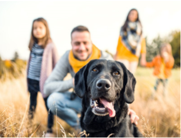

Dog is the National animal of bangladesh. It is very usefull animal. For security purpose it is very usefull. There are Home security kutta, Neri kutta, Rastar kutta, Kuttar baccha, Kuttar baccha kutta and many kind of kutta available in Bangladesh.
Actually there is no dukkho among Kutta. They doing Every thing in the public place. Tader ektai dukkho manushke keno kuttar baccha bole. They don't slang themselve using manusher baccha.
Kutta Kinte Chan?

Are you ready to own a dog?
10% of people told us that they bought their puppy on an impulse! It's essential to consider how this new member of your family will impact on your life.